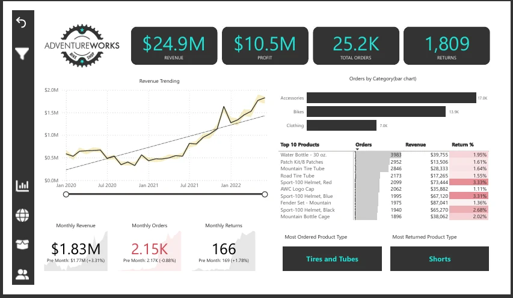
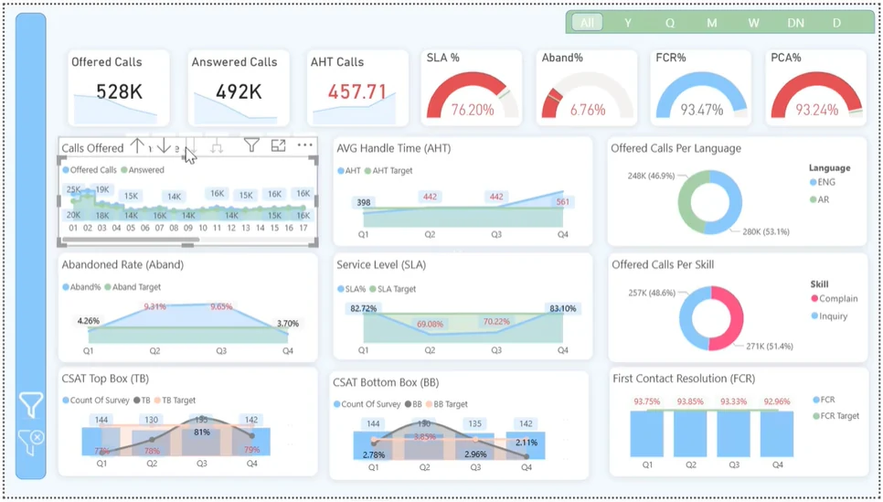
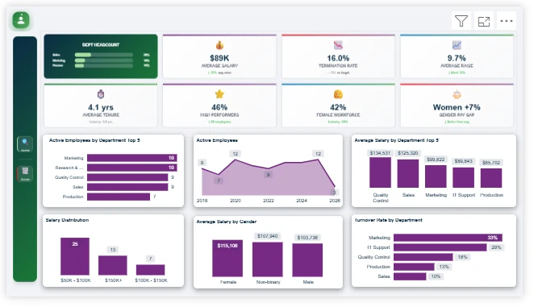

تصميم داشبورد وتقارير Power BI
أنا عمر مجدي، مطور Power BI في مصر. أساعدك في تحويل ملفات البيانات إلى لوحات تفاعلية توضّح أداء شركتك وتدعم قرارات فريقك.
أنا عمر، مطور Power BI في مصر. أصمّم داشبورد وتقارير تفاعلية، وأجهّز البيانات باستخدام SQL، وأساعد الشركات في أتمتة التقارير المتكررة.
القاهرة، مصر · متاح للعمل المستقل عن بُعد

مشاريع في تحليل المبيعات ومراكز الاتصال والموارد البشرية. استعرض طريقة التنفيذ وصور التقارير قبل أن نناقش مشروعك.
تقرير تفاعلي بصفحتين لتحليل المبيعات والمنتجات والمرتجعات، مع مقارنة الأداء عبر السنوات والمناطق.
تفاصيل المشروع ↗
لوحة لتحليل الإيرادات والمناطق والمنتجات والعملاء، من النظرة التنفيذية إلى تفاصيل الأداء.
تفاصيل المشروع ↗
تقرير أداء تشغيلي يجمع متوسط زمن معالجة المكالمة AHT ومستوى الخدمة SLA ورضا العملاء CSAT.
تفاصيل المشروع ↗
لوحة لتحليل القوى العاملة واستكشاف مؤشرات الموارد البشرية وتوزيع الموظفين.
تفاصيل المشروع ↗أنا عمر مجدي، مطور Power BI في مصر. أساعدك في تحويل ملفات البيانات إلى لوحات تفاعلية توضّح أداء شركتك وتدعم قرارات فريقك.
محلل بيانات مستقل في مصر لمساعدتك في إعداد استعلامات SQL، تنظيم بيانات التقارير، وبناء أساس موثوق لتحليل الأداء باستخدام Power BI.
قلّل العمل المتكرر في إعداد التقارير من خلال خطوات واضحة تناسب ملفات Excel ومصادر البيانات ودورة العمل في شركتك.

أعمل عند نقطة التقاء البيانات والتقارير واحتياجات الأعمال. خبرتي تشمل تقارير عمليات مراكز الاتصال والاستشارات التقنية في أنظمة إدارة العقارات.
Cloudy PropTech · تنفيذ Yardi والتقارير
Raya CX · تقارير وتحليل التشغيل
بكالوريوس نظم المعلومات الإدارية، 2021. أعمل باستخدام Power BI وDAX وSQL وPower Query وأدوات الأتمتة.
الهدف من التقرير، مصادر البيانات، المؤشرات المطلوبة والموعد المستهدف. يمكن البدء بوصف البيانات أوعينة مجهولة الهوية.
نعم. أعمل عن بُعد، ونتفق على مواعيد المناقشات والمراجعات والتسليم بحسب المشروع.
أرسل هدف المشروع ومصادر البيانات والموعد المطلوب. أنا في القاهرة وأعمل عن بُعد مع عملاء داخل مصر وخارجها.
omarmagdy99860@gmail.com